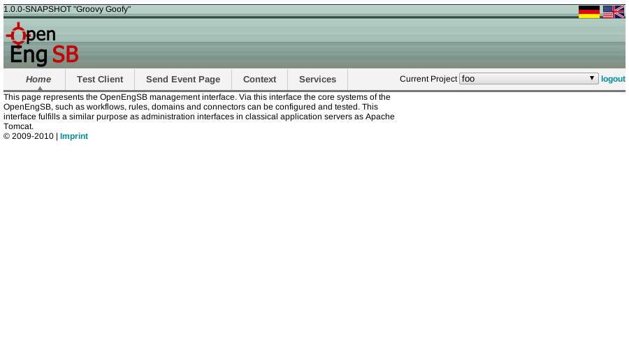

4.1. Goal
This section describes the setup process required for OpenEngSB development.
If you would like to view a use-case centric tutorial take a look at the continuous integration example.
4.2. Time to Complete
If you are already familiar with Java EE servers about 15 minutes. We will not be using advanced concepts, so you likely be able to continue with the tutorial even without it.
4.3. Prerequisites
It is assumed you have basic knowledge of system administration and you are able to set up auxiliary software (i.e. JDK 1.6) youself.
4.4. Java Development Kit 6
First of all the JDK6 should be installed on the system and the JAVA_HOME variable should be set. (Java download).
Also, make sure that the java-command is available in the PATH-variable.
4.5. Getting OpenEngSB
Download the latest OpenEngSB release from here.
4.6. Installing OpenEngSB
Extract the archive, and run the openengsb-script (bin/openengsb.bat on windows, bin/openengsb otherwise). Click the following link to open the web interface in your browser http://localhost:8090/openengsb.You should automatically be directed to a page asking for a login. The default login is "admin" with "password" as password.
 login
login
If everything works fine you should be welcomed by the following page presenting you the currently installed domains:
 main page4.7. Setup required domains
OpenEngSB implements it's functionality in so called features. Each feature contains a number of OSGi bundles. While all features are distributed with the OpenEngSB not all of them are installed to speed up the startup. For the next section (First Steps) it is required to install additional features. Therefore open the console in which you've started the OpenEngSB and enter "list" which should output something like:
karaf@root> list START LEVEL 100 , List Threshold: 50 ID State Blueprint Level Name [ 42] [Active ] [Created ] [ 60] Apache Karaf :: Shell :: Service Wrapper (2.2 ... [ 116] [Active ] [ ] [ 60] Jackson JSON processor (1.5.3) [ 117] [Active ] [Created ] [ 60] OpenEngSB :: Core :: Common (1.2.0.SNAPSHOT) [ 118] [Active ] [Created ] [ 60] OpenEngSB :: Core :: Events (1.2.0.SNAPSHOT) [ 119] [Active ] [Created ] [ 60] OpenEngSB :: Core :: Persistence Layer (1.2.0 [ 120] [Active ] [Created ] [ 60] OpenEngSB :: Core :: Security (1.2.0.SNAPSHOT [ 121] [Active ] [Created ] [ 60] OpenEngSB :: Core :: Workflow Engine (1.2.0.S [ 122] [Active ] [Created ] [ 60] OpenEngSB :: Domains :: Auditing :: Implement [ 123] [Active ] [Created ] [ 60] OpenEngSB :: Connector :: MemoryAuditing (1.2 [ 124] [Active ] [Created ] [ 60] OpenEngSB :: Domain :: Example (1.2.0.SNAPSHO [ 125] [Active ] [Created ] [ 60] OpenEngSB :: Connector :: Example (1.2.0.SNAP [ 126] [Active ] [Created ] [ 60] OpenEngSB :: Core :: Ports :: JMS (1.2.0.SNAP [ 127] [Active ] [Created ] [ 60] OpenEngSB :: User Interface :: Common (1.2.0. [ 128] [Active ] [ ] [ 60] OpenEngSB :: User Interface :: Administration [ 129] [Active ] [Created ] [ 60] OpenEngSB :: Core :: Deployer :: Connector (1
In order to install domains and connectors from other repositories you need to add the corresponding feature-URLs. Note that in order to install a connector you need to install all domains it implements.
Table 4.1. Supported domains
| name | feature-url |
|---|---|
| appointment | mvn:org.openengsb.domain/openengsb-domain-appointment/1.2.1/xml/features |
| build | mvn:org.openengsb.domain/openengsb-domain-build/1.2.1/xml/features |
| contact | mvn:org.openengsb.domain/openengsb-domain-contact/1.2.1/xml/features |
| deploy | mvn:org.openengsb.domain/openengsb-domain-deploy/1.2.1/xml/features |
| issue | mvn:org.openengsb.domain/openengsb-domain-issue/1.2.1/xml/features |
| notification | mvn:org.openengsb.domain/openengsb-domain-notification/1.2.1/xml/features |
| report | mvn:org.openengsb.domain/openengsb-domain-report/1.2.1/xml/features |
| scm | mvn:org.openengsb.domain/openengsb-domain-scm/1.2.1/xml/features |
| test | mvn:org.openengsb.domain/openengsb-domain-test/1.2.1/xml/features |
Table 4.2. Supported connectors
| name | feature-url |
|---|---|
| mvn:org.openengsb.connector/openengsb-connector-email/1.2.1/xml/features | |
| gcalendar | mvn:org.openengsb.connector/openengsb-connector-gcalendar/1.2.1/xml/features |
| gcontacts | mvn:org.openengsb.connector/openengsb-connector-gcontacts/1.2.1/xml/features |
| git | mvn:org.openengsb.connector/openengsb-connector-git/1.2.1/xml/features |
| github | mvn:org.openengsb.connector/openengsb-connector-github/1.2.1/xml/features |
| mvn:org.openengsb.connector/openengsb-connector-email/1.2.1/xml/features | |
| jira | mvn:org.openengsb.connector/openengsb-connector-jira/1.2.1/xml/features |
| maven | mvn:org.openengsb.connector/openengsb-connector-maven/1.2.1/xml/features |
| plaintextreport | mvn:org.openengsb.connector/openengsb-connector-plaintextreport/1.2.1/xml/features |
| promreport | mvn:org.openengsb.connector/openengsb-connector-promreport/1.2.1/xml/features |
| trac | mvn:org.openengsb.connector/openengsb-connector-trac/1.2.1/xml/features |
In order to install a domain first add the feature-repository using the command features:addurl. When the URL has been added the domain can usually be installed using features:install
root@openengsb>features:addurl mvn:org.openengsb.domain/openengsb-domain-notification/1.2.1/xml/features root@openengsb>features:install openengsb-domain-notification
Note that domains and connectors are versioned independently of each other and the OpenEngSB. It's possible to run openengsb-domain-issue-1.2.0 with openengsb-connector-jira-1.2.1 inside openengsb-1.3.0.M2
4.8. First Steps
Now that the OpenEngSB is up and running (and all required bundles are installed) start with the first integration tutorial.
4.9. Shutdown OpenEngSB
To shutdown the OpenEngSB, go to the command-window and type shutdown or press Ctrl+D
| Prev | Home | Next |
| Part II. Tutorials | OpenEngSB Community | Chapter 5. HowTo - Extend OpenEngSB Console |